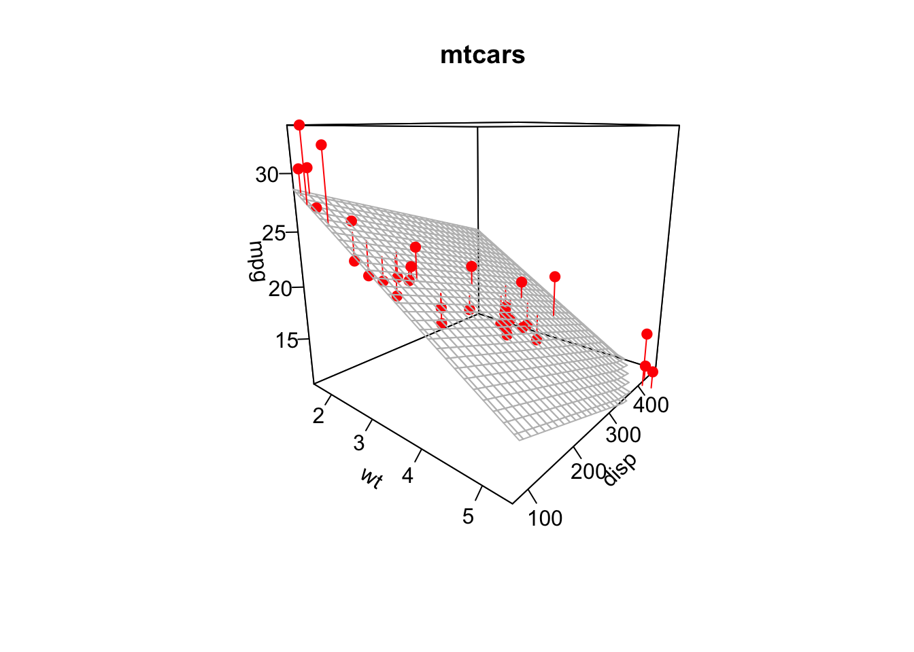

Chapter 4 Standard Errors
In the previous chapter we have seen how the OLS method can produce estimates about intercept and slope coefficients from data. You have seen this method at work in R by using the lm function as well. It is now time to introduce the notion that given that \(\hat{\beta}_0\) and \(\hat{\beta}_1\) are estimates of some unkown population parameters, there is some degree of uncertainty about their values. An other way to say this is that we want some indication about the precision of those estimates.
Let’s remind ourselves of the example at the end of the previous chapter, and that we introduced the term confidence interval, shown here as the shaded area:

The shaded area shows us the region within which the true red line will lie with 95% probability. The fact that there is unknown true line (i.e. a true slope coefficient \(\beta_1\)) that we wish to uncover from a sample of data should remind you immediately of our first tutorial. There we wanted to estimate the true population mean from a sample of data, and we saw that as the sample size \(N\) increased, our estimate got better and better - fundamentally this is the same idea here.
4.1 What is true?
We have a true data-generating process in mind. Let’s bring back our simple model (3.1) from the previous chapter:
\[ y_i = \beta_0 + \beta_1 x_i + \varepsilon_i \tag{4.1} \]
First, we assume that this is the correct represenation of the DGP, which looks like the above equation. With that assumption in place, the values \(\beta_0\) and \(\beta_1\) are the true parameter values which generated the data. Notice, that both \(\beta_0\) and \(\beta_1\) don’t have a “hat”, which is widely used to indicate an estimate. Now, the fact that our data \((y_i,x_i)\) are a sample from a larger population means that there will be sampling variation in our estimates \(\hat{\beta}_0\) and \(\hat{\beta}_1\) - exactly like in the case of the sample mean estimating the population average as mentioned above.
4.2 Experiencing Standard Errors
We would like to make this point in a purely experiential way, i.e. we want you to experience what is going on. We invite you to spend some time with the following apps, before going into the associated tutorial:
library(ScPoEconometrics)
launchApp("standard_errors_simple") # start with this
launchApp("standard_errors_changeN") # then do that
library(learnr) # load the learner library
run_tutorial("standared-errors") # WIP4.3 Standard Errors in Theory
The precise formulae for the standard errors of regression coefficients depend critically on exactly which model we talk about. In other words, certain assumptions about the underlying DGP give rise to certain standard error formulas. What we continue to call the simple linear regression model is in fact a list of 5 assumptions. It is time to spell them out here:
- The model is linear in parameters. I.e. it looks like (4.1) above.
- \((y_i,x_i)\) constitute a random sample from the underlying population: the sample is representative.
- The mean of \(\varepsilon\) in (4.1) is zero, conditional on \(x\). This means that \(\varepsilon\) and \(x\) should not be correlated.
In our simple linear regression model the standard errors of the estimates have the following form